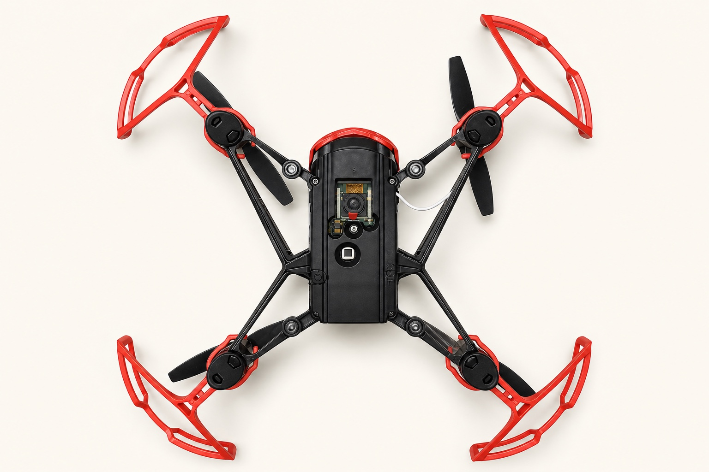
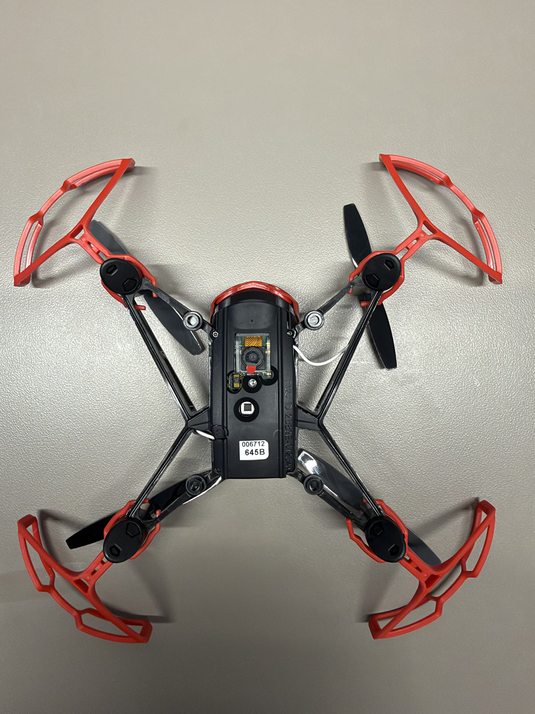
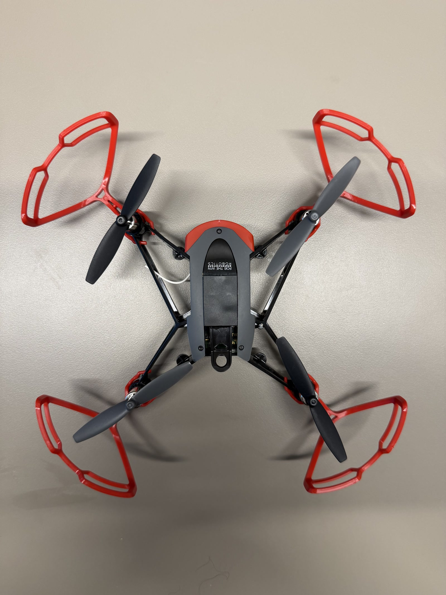

Stabilization sensing
The flight controller continuously estimates attitude and motion, then adjusts the four motors. This loop must keep working even when your lesson code is idle.
Observe before you automate
Learn what can actually be seen on the classroom aircraft, what the flight controller must estimate, and how to describe sensors without turning inference into fact.
A quadrotor has to answer two different questions at once: “How am I moving?” and “What is in the image?” Hopper Studio keeps those jobs separate.
The flight controller continuously estimates attitude and motion, then adjusts the four motors. This loop must keep working even when your lesson code is idle.
Hopper Studio captures pixels, then runs thresholding, COCO-SSD, a Teachable Machine classifier, or AprilTag detection on the host computer.
The important distinction is computational: the classroom vision algorithms run in the browser or desktop app. They are not proof that a neural network is running on the aircraft. Likewise, a camera frame is not a direct reading of altitude, velocity, or heading.
The generated illustration below is based on the supplied 4032 × 3024 underside photograph. Numbered labels are HTML overlays so the wording stays exact and accessible.

A lens and exposed circuit assembly are clearly visible. The photo establishes location and orientation, but not resolution, frame rate, field of view, or whether this is the exact feed used by Hopper Studio.
A smaller package is visible next to the main lens. Its appearance alone does not prove optical-flow, infrared, or another specific function.
A square downward-facing window is visible on the centerline. Its shape does not establish what is behind it; a manual or instrumented test is needed before calling it a range sensor or naming a sensing technology.
Each arm carries one motor and two-blade propeller. The red guards are safety hardware, not sensors, but they change mass, drag, and collision behavior.


A flight controller combines incomplete, noisy measurements to estimate quantities it cannot measure directly. This is called sensor fusion.
The hat in means “estimated.” The function predicts forward from the previous estimate and motor command; new measurements correct the drift.
Most quadrotor flight controllers use gyroscopes and accelerometers to estimate angular motion and attitude. Treat this as a typical architecture unless Hopper hardware documentation confirms the exact device.
Barometers and magnetometers are common on some aircraft, but neither can be identified from these photographs. Do not list them as verified Hopper components.
Altitude and velocity are usually fused estimates. A downward range measurement, visual motion, acceleration, and pressure can each contribute, depending on the hardware and firmware.
No external GPS antenna is visible, and this lab is designed around indoor relative sensing. That is not the same as proving there is no internal receiver.
A number without a frame, unit, update rate, and uncertainty is not yet useful scientific information.
| Question | Why it matters | Classroom example |
|---|---|---|
| What is the quantity? | Avoids confusing a direct measurement with an estimate. | Pixel brightness is measured; object class is inferred. |
| Which coordinate frame? | A positive sign has no meaning without an axis convention. | Image x is positive right; image y is positive up in Hopper Studio coordinates. |
| What are the units? | Percent, pixels, degrees, and seconds are not interchangeable. | Object confidence is a fraction in code but a percentage in the blocks UI. |
| How fresh is it? | Some values come from a new scan; others reuse stored state. | seesObject() scans now; objectCoordinate() reads the last stored match. |
| What can make it fail? | Every sensor and algorithm has conditions where it becomes unreliable. | Low texture, glare, motion blur, small targets, occlusion, or a blocked downward view. |
Because we still need the sensor or estimator, coordinate frame, unit, sign convention, timestamp, and uncertainty. In Hopper vision, x = +20 usually means a stored image coordinate 20% of half-frame to the right—not a world position in centimeters.